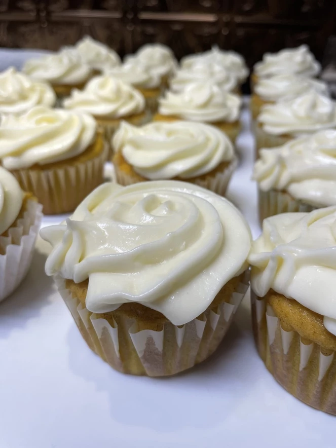

The Best Pumpkin Roll Cupcakes

A Taste of Fall
One of my favorite fall desserts has to be the infamous Pumpkin Roll, also known as the Pumpkin Log.
Moist pumpkin cake meets rich cream cheese icing. Can the dessert get any more fall-bulous than that??
Spoiler alert, it can.
You can now hold this delicious dessert in the palm of your hand, AND no more rolling the cake. It's a win-win.
Ingredients
- Cake
- 2 1/4 cups All Purpose Flour
- 1 tablespoon Baking Powder
- 1/2 teaspoon Baking Soda
- 1 teaspoon Ground Cinnamon
- 1 stick Butter (softened)
- 1 1/3 cup Granulated Sugar
- 2 Eggs
- 1 1/2 cup canned Pumpkin
- 3/4 cup Milk
- Icing
- 16 ounces Cream Cheese (room temperature)
- 1 stick Butter (softened)
- 2 teaspoons Vanilla Extract
- 2 cups Powdered Sugar
Directions
- Cupcakes
- Line muffin pan(s) with 24 cupcake liners.
- Preheat oven to 375 F.
- Combine flour, baking powder, baking soda, and cinnamon in a medium bowl.
- In a separate bowl, beat butter and sugar on medium speed until fluffy using a mixer.
- Beat eggs into butter/sugar mixture.
- Add pumpkin and mix.
- Stir in dry ingredients alternately with milk. Mix until mixture is smooth.
- Fill the cupcake liners 2/3 full with batter. Bake for 20-25 minutes or until toothpick comes clean. Remove cupcakes from pan to cool.
- When cooled, scoop out the center of the cupcake using a small ice cream scoop or icing tip. Save the extra cake for cake balls. Then, pipe icing into the cupcake.
- Icing
- Beat butter and cream cheese on medium speed until fluffy using a mixer.
- Mix in vanilla.
- Slowly add the powdered sugar, scraping the bottom and sides of bowl after each addition.
- Frost each cupcake as desired.